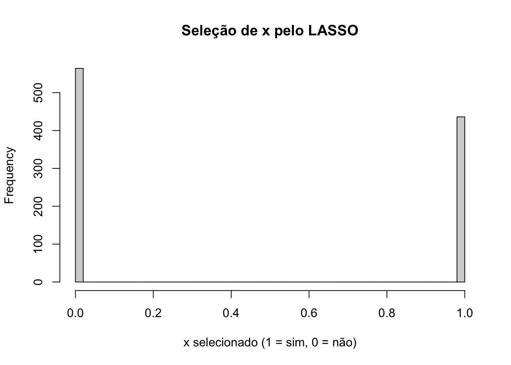

Capítulo 12 Machine Learning
12.1 Introdução
Em estudos observacionais, como vimos, análises baseadas no pressuposto de conditional ignorability do tratamento e positividade permitem a estimação de quantidades causais de interesse. As técnicas de machine learning foram desenvolvidas em geral voltadas para problema de previsão, não de inferência causal. Por isso, não são normalmente uma alternativa boa para as questões de identificação causal que temos discutido no curso. Contudo, com algumas adaptações, podem ser usadas para análise de causa e efeito.
Uma das abordagens mais populares é a sugerida por Belloni et. al (2014), de usar LASSO (Least Absolute Shrinkage and Selection Operator) para inferir causalidade.
12.2 Terminologia
Estatística Machine Learning
observações
12.2.1 LASSO
O estimador de Mínimos Quadrados Ordinários é obtido minimizando a soma dos quadrados dos resíduos, isto é, em uma regressão \(y_i = \beta_0 + \beta_1 x_{1i} + \beta_2 x_{2i} + \ldots + \beta_p x_{pi} + e_i\), minimizamos \(\sum_{i=1}^n [y_i - (\alpha + \beta_1x_{1i} + \beta_2 x_{2i} + \ldots + \beta_px_{pi})]^2\). Nós podemos pensar essa minimização como uma função de custo. Quanto menor o erro total, menor o custo.
O estimador de LASSO adiciona uma penalidade a essa função de minimização \(\lambda \sum_{j=1}^p |\beta_j|\), ou seja, passamos a minimizar: \(\sum_{i=1}^n [y_i - (\alpha + \beta_1x_{1i} + \beta_2x_{2i} + \ldots + \beta_px_{pi})]^2 + \lambda \sum_{j=1}^p |\beta_j|\)
O termo \(\sum_{j=1}^p |\beta_j|\) é chamado de norma L1. Ele envolve a soma absoluta dos parâmetros. Existem outras normas (L0, L2 etc.), isto é, outras formas de penalizar a estimação dos coeficientes. A norma L1 é conhecida como distância de Manhathan, e a intuição é que, se tenho dois pontos em Manhatan, \((x_1, y_1)\) e \((x_2, y_2)\), que são ruas em esquinas opostas de uma quadra (na diagonal). Como as ruas são, em geral, em formato de grade, temos de andar uma quadra na vertical e outra na horizontal para sair de um ponto a outro. Essa distância é a norma L1. Se usássamos a norma L2, por exemplo, poderíamos ir na diagonal, que é dada pela distância euclidiana.
E \(\lambda\) é um parâmetro não negativo que controla a força da penalização. Veja que coeficientes positivos dos \(\beta\) aumentam o custo total, de modo que eles precisam ser compensados pelo ganho gerado na capacidade preditiva da variável associada (quanto maior a correlação parcial, menor o erro). Assim, ao introduzir essa penalidade, o LASSO estimula que apenas as variáveis com maior capacidade preditiva possuam coeficientes positivos, enquanto as de baixa capacidade preditiva terão coeficiente igual a zero. Nós chamamos isso de esparsividade do voetor de coeficientes, já que muitos deles serão zero. Dizemos também que a regressão foi estimada com regularização. Veja que o LASSO é o equivalente a uma regressão Bayesiana com uma priori nos parâmetros igual a um dupla exponencial, levando à interpretação de que a priori é uma forma de regularizar estimativas.
Quando \(\lambda \to 0\), of coeficientes convergem para os estimadores de MQO, e quando \(\lambda \to \infty\) apenas o intercepto resta. Em ML, o método usual para achar \(\lambda\) é validação cruzada (CV, de cross-validation), que é utilizada para favorecer previsões fora da amostra. Belloni et al. (2012) advoga escolhada baseada em teoria, também conhecido como LASSO rigoroso. Angrist & Frandsen (2022) concluiram que essa abordagem rigorosa tende a favorecer modelos mais parsimoniosos (\(\lambda\) maiores) do que com CV.
12.2.2 Double Lasso
O estimador robusto mais popular é o Double Lasso. A ideia é que se eu tentar usar LASSO diretamente na equação de regressão \(y_i = \alpha + \beta_1D_i + BX + e_i\), variáveis correlacionadas entre si terão coeficientes zero, e potencialmente o tratamento será um delas, impedindo a estimação da quantidade causal de interesse. Estratégias como forçar D_i a permanecer na equação implicam que ficará fora da equação de penalização. Contudo, isso pode causar viés na estimação de \(\beta_1\) (Belloni et al., 2014). Essa regularização força variáveis correlacionadas com o tratamento a serem dropadas, o que significa dropar potenciais variáveis de confusão.
Resumo: não use as técnicas de ML diretamente na equação de regressão.
Exemplo.
# vou rodar mil simulações com n=100
set.seed(10)
k <- 50 # número de controles
n <- 100 # número de obs
alpha <- .2 # intercepto
beta <- 0 # efeito do tratamento
gamma <- runif(min=-1, max=1, n=k) # efeito do vetor de controles
delta <- runif(min=-1, max=1, n=k)
erro <- rnorm(n)
vec_x <- rnorm(n*k, mean = rep(0,k)) # vetor de controles
x <- matrix(vec_x, ncol=k)
D <- x%*%delta + rnorm(n)
y <- alpha + beta*D + x%*%gamma + erro
fit <- lm(y ~D + x)library(MASS)
sim_df_ds <- function(n_sim=1000, n_sample=100) {
vec_p_values <- numeric()
lista_df <- list()
for ( i in 1:n_sim) {
n <- n_sample
alpha <- .2
beta <- 0
gamma <- .2
erro <- rnorm(n)
mean_vector <- c(0, 0)
cov_matrix <- matrix(c(1, 0.8, 0.8, 1), nrow = 2, ncol = 2)
# Gerando os dados
simulated_data <- mvrnorm(n = n, mu = mean_vector, Sigma = cov_matrix)
# Convertendo para um data frame para facilitar a manipulação
D = simulated_data[,1]
x = simulated_data[,2]
y <- alpha + beta*D + gamma*x + erro
df_sim <- data.frame(y, D, x)
lista_df[[i]] <- df_sim
}
return(lista_df)
}
lista_df <- sim_df_ds()
vec_p_values <- numeric()
for (i in 1:1000) {
fit <- lm(y ~D + x, data=lista_df[[i]])
summary_fit <- summary(fit)
# Obtendo o valor p associado ao coeficiente de x
vec_p_values[i] <- summary_fit$coefficients["D", "Pr(>|t|)"]
}
hist(vec_p_values, breaks = 40, main = "Teste de signific. de D", xlab = "p-valor")
abline(v = 0.05, col = "red", lwd = 1, lty = 1)
text(0.1, par("usr")[4] * 0.75, "0.05", col = "red", pos = 3, cex=.5)
## [1] 0.059Nós rejeitamos a hipótese nula aproximadamente 50% do tempo.
E se usarmos LASSO (single LASSO)?
# Instalar e carregar o pacote glmnet, se necessário
library(glmnet)
# Vetor para armazenar se x foi selecionado pelo LASSO
lasso_selected_D <- numeric()
# Loop de simulação
for (i in 1:1000) {
y <- lista_df[[i]]$y
X <- cbind(lista_df[[i]]$D, lista_df[[i]]$x)
# Preparando os dados para o LASSO
# Matriz de preditores (sem a interceptação)
# Ajustando o modelo LASSO com validação cruzada
lasso_model <- cv.glmnet(X, y, alpha = 1) # alpha = 1 para LASSO
# Extraindo os coeficientes no valor de lambda que minimiza o erro
lasso_coefs <- coef(lasso_model, s = "lambda.min")
# Verificando se a variável x foi selecionada pelo LASSO (coeficiente diferente de zero)
lasso_selected_D[i] <- ifelse(lasso_coefs["V1", 1] != 0, 1, 0)
}
# Analisando os resultados
hist(lasso_selected_D, breaks = 40, main = "Seleção de x pelo LASSO", xlab = "x selecionado (1 = sim, 0 = não)")
## [1] 0.564Também não funciona, mais ou menos mesma taxa de erro.
12.2.3 Outras soluções ineficazes
Bootstrap (não funciona) Clássico: suponha que a covariável não é relevante Conservador: sempre inclua quantos controles puder (pode gerar Collider Bias).
DL lida com essa situação fazendo uma modelagem dupla, tanto do tratamento quanto da respota. Daí o nome, Double Lasso.
12.3 DL - Algoritmo
Passo 1. Inclua controle se ele for preditor significativo da resposta \(y_i\) por um teste conservador (teste t, LASSO etc.)
PAsso 2. Inclua controle se ele preditor significativo do tratamento \(D_i\) por um teste conservador (teste t, LASSO etc.).
Passo 3. Ajuste o modelo com as variáveis selecionadas e o tratamento. Esse passo é chamado de Pós MQO (Post OLS)
Np R, podemos usar o pacote “hdm” para fazer a implementação em uma linha.
library(hdm)
library(knitr)
d_s_vec <- numeric()
for ( i in 1:1000) {
my_double_selection <- rlassoEffects(y~. , I=~x + D, data=lista_df[[i]])
d_s_vec[i] <- summary(my_double_selection)$coefficients["D", "Pr(>|t|)"]
}
hist(d_s_vec, breaks = 40, main = "Seleção de D pelo Double LASSO", xlab = "p-valor")
abline(v = 0.05, col = "red", lwd = 1, lty = 1)
text(0.1, par("usr")[4] * 0.75, "0.05", col = "red", pos = 3, cex=.5)## [1] 0.062Como vemos, aproximadamente 5% das vezes nós rejeitamos a hipótese nula erradamente, que é o esperado do p-valor de 5%.